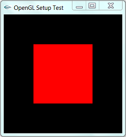

We need a C/C++ compiler, either GCC (GNU Compiler Collection) from MinGW or Cygwin (for Windows), or Visual C/C++ Compiler, or others.
We need the following sets of libraries in programming OpenGL:
- Core OpenGL (GL): consists of hundreds of functions, which begin with a prefix "
gl" (e.g.,glColor,glVertex,glTranslate,glRotate). The Core OpenGL models an object via a set of geometric primitives, such as point, line, and polygon. - OpenGL Utility Library (GLU):
built on-top of the core OpenGL to provide important utilities and more
building models (such as qradric surfaces). GLU functions start with a
prefix "
glu" (e.g.,gluLookAt,gluPerspective) - OpenGL Utilities Toolkit (GLUT):
provides support to interact with the Operating System (such as
creating a window, handling key and mouse inputs); and more building
models (such as sphere and torus). GLUT functions start with a prefix
of "
glut" (e.g.,glutCreatewindow,glutMouseFunc).
Quoting from the opengl.org: "GLUT is designed for constructing small to medium sized OpenGL programs. While GLUT is well-suited to learning OpenGL and developing simple OpenGL applications, GLUT is not a full-featured toolkit so large applications requiring sophisticated user interfaces are better off using native window system toolkits. GLUT is simple, easy, and small."
Alternative of GLUT includes SDL, .... - OpenGL Extension Wrangler Library (GLEW): "GLEW is a cross-platform open-source C/C++ extension loading library. GLEW provides efficient run-time mechanisms for determining which OpenGL extensions are supported on the target platform." Source and pre-build binary available at http://glew.sourceforge.net/.
Each of the software package consists of:
- A header file: "
gl.h" for core OpenGL, "glu.h" for GLU, and "glut.h" (or "freeglut.h") for GLUT, typically kept under "include\GL" directory. - A static library: for example, in Win32, "
libopengl32.a" for core OpenGL, "libglu32.a" for GLU, "libglut32.a" (or "libfreeglut.a" or "glut32.lib") for GLUT, typically kept under "lib" directory. - An optional shared library: for example, "
glut32.dll" (for "freeglut.dll") for GLUT under Win32, typically kept under "bin" or "c:\windows\system32".
It is important to locate the directory path and the actual filename of these header files and libraries in your operating platform in order to properly setup the OpenGL programming environment.
1. Eclipse CDT with Cygwin or MinGW
1.1 Installing Eclipse CDT / Cygwin or MinGW, OpenGL, GLU and GLUT
Step 1: Setup the Eclipse CDT (C Development Toolkit)
Read "How to install Eclipse CDT".
Step 2: Setup a GCC Compiler
We could use either MinGW or Cygwin.
- MinGW: For MinGW, we need to install GLUT separately. Download freeglut (@ http://freeglut.sourceforge.net/index.php). I recommend using the pre-package version for MinGW (freeglut 2.8.0 MinGW Package) available at http://www.transmissionzero.co.uk/software/freeglut-devel/.
Download, unzip and copy header files from "include\GL" to "<MINGW_HOME>\include\GL"; the libraries from "lib" to "<MINGW_HOME>\lib", and shared library from "bin" to "<MINGW_HOME>\bin" (which should be included in the PATH environment variable), where<MINGW_HOME>is the MinGW installed directory.
Take note of the headers and libraries:- Headers: the OpenGL header "
gl.h", GLU header "glu.h" and GLUT header "glut.h" (or "freeglut.h") are kept in "<MINGW_HOME>\include\GL" directory. Since "<MINGW_HOME>\include" is in the implicit include-path. We can include the headers as<GL/glut.h>,<GL/glt.h>, and<GL/gl.h>. - Libraries: the OpenGL library "
libopengl32.a", GLU library "libglu32.a" and GLUT library "libfreeglut.a" are kept in "<MINGW_HOME>\lib" directory. This directory is in the implicit library-path.
Nonetheless, we need to include these libraries in linking. They shall be referred to as "opengl32", "glu32", "freeglut" without the prefix "lib" and suffix ".a".
glut.h" to "<MINGW_HOME>\include\GL", "glut32.lib" to "<MINGW_HOME>\lib", and "glut32.dll" to "<MINGW_HOME>\bin" (which should be included in the PATH)) - Headers: the OpenGL header "
- Cygwin: We need to install "
gcc", "g++", "gdb", "make" (under the "Devel" category) and "opengl", "freeglut" (under the "Graphics" category).- Headers: the OpenGL header "
gl.h", GLU header "glu.h", and GLUT header "glut.h" are provided in the "<CYGWIN_HOME>\usr\include\w32api\GL" directory. As "<CYGWIN_HOME>\usr\include\w32api" is in the implicit include-path. We can include the headers as<GL/glut.h>,<GL/glt.h>, and<GL/gl.h>. - Libraries: the OpenGL library "
libopengl32.a", GLU library "libglu32.a" and GLUT library "libglut32.a" are provided in the "<CYGWIN_HOME>\lib\w32api" directory. This directory is in the implicit library-path.
Nonetheless, we need to include these libraries in linking. They shall be referred to as "opengl32", "glu32", "glut32" without the prefix "lib" and suffix ".a".
- Headers: the OpenGL header "
Step 3: Configuring the Include-Path, Lib-Path and Library: We can configure on per-project basis by right-click on the project ⇒ Properties ⇒ C/C++ general ⇒ Paths and Symbols ⇒ Use "Includes" panel to configure the Include-Path; "Library Paths" panel for the Lib-Path; and "Libraries" panel for individual libraries. We will do this later.
On command-line (for GCC), we could use option -I<dir> for include-path, -L<dir> for lib-path, and -l<lib> for library.
1.2 Writing Your First OpenGL Program
- Launch Eclipse.
- Create a new C++ project: Select "File" menu ⇒ New ⇒ Project... ⇒ C/C++ ⇒ C++ Project ⇒ Next.
In "Project name", enter "Hello" ⇒ In "Project type", select "Executable", "Empty Project" ⇒ In "Toolchain", select "Cygwin GCC" or "MinGW GCC" (depending on your setup) ⇒ Next ⇒ Finish. - Create a new Source file: Right-click on the project node ⇒ New ⇒ Other... ⇒ C/C++ ⇒ Source file ⇒ Next.
In "Source file", enter "GL01Hello.cpp" ⇒ Finish. - In the editor panel for "
GL01Hello.cpp", type the following source codes:
NOTE: For Windows, you should include "windows.h" header before the OpenGL headers./* * GL01Hello.cpp: Test OpenGL C/C++ Setup */ #include <windows.h> // For MS Windows #include <GL/glut.h> // GLUT, includes glu.h and gl.h /* Handler for window-repaint event. Call back when the window first appears and whenever the window needs to be re-painted. */ void display() { glClearColor(0.0f, 0.0f, 0.0f, 1.0f); // Set background color to black and opaque

glClear(GL_COLOR_BUFFER_BIT); // Clear the color buffer // Draw a Red 1x1 Square centered at origin glBegin(GL_QUADS); // Each set of 4 vertices form a quad glColor3f(1.0f, 0.0f, 0.0f); // Red glVertex2f(-0.5f, -0.5f); // x, y glVertex2f( 0.5f, -0.5f); glVertex2f( 0.5f, 0.5f); glVertex2f(-0.5f, 0.5f); glEnd(); glFlush(); // Render now } /* Main function: GLUT runs as a console application starting at main() */ int main(int argc, char** argv) { glutInit(&argc, argv); // Initialize GLUT glutCreateWindow("OpenGL Setup Test"); // Create a window with the given title glutInitWindowSize(320, 320); // Set the window's initial width & height glutInitWindowPosition(50, 50); // Position the window's initial top-left corner glutDisplayFunc(display); // Register display callback handler for window re-paint glutMainLoop(); // Enter the infinitely event-processing loop return 0; } - Configuring the "include-paths", "library-paths" and "libraries":
Right-click on the project ⇒ Property ⇒ C/C++ general ⇒ Paths and Symbols.
Open the "Libraries" tab ⇒ Add ⇒ Enter "glut32" (Cygwin) or "freeglut" (MinGW with freeglut) ⇒ Add ⇒ Enter "glu32" ⇒ Add ⇒ Enter "opengl32".
There is no need to configure the "include-paths" and "library-paths", as they are implicitly defined. - Build (right-click on the project node ⇒ "Build Project") and Run (right-click on the project node ⇒ Run As ⇒ Local C/C++ Application).
1.3 GCC Compilation in Command-line
Observe the Eclipse's console. It uses the following commands to build the project:
> g++ -O0 -g3 -Wall -c -fmessage-length=0 -o GL01Hello.o "..\\GL01Hello.cpp" // -c indicates compile-only // -o <filename>: specifies the output filename // -Wall shows all warning messages // -O0 specifies the optimization level // -g3 specifies the debugging information level, level 3 with extra information // -fmessage-length=0 specifies the formatted error message length, 0 for no line wrapping > g++ -o GL01Hello.exe GL01Hello.o -lglu32 -lopengl32 -lfreeglut // -o <filename>: specifies the output filename // -l<lib> specifies the library to be linked, which should be in the lib-path
The most important option is -l<lib>, which specifies the "library" to be linked. You might also need -I<dir> to specify the "include-path" and -L<dir> to specify the "lib-path", if the header files and libraries are not kept in implicit directories used by the compiler.
You can find the commands used in Eclipse CDT for build the project at ".metadata\.plugins\org.eclipse.cdt.ui\global-build.log".
2. CodeBlocks / MinGW
2.1 Installing CodeBlocks, MinGW and GLUT
- Install CodeBlocks and MinGW: Read "How to install CodeBlocks".
- Install GLUT: Refer to the above "step" in Eclipse/MinGW setup.
2.2 Writing Your First OpenGL Program
- Create a new project: File ⇒ New ⇒ Project... ⇒ Console Application ⇒ GO ⇒ C++ ⇒ In "Project title", enter "hello" ⇒ Next ⇒ Finish.
- Open "
main.cpp", and replace with the code, as shown in the previous section. - Configure the libraries: Right-click on the project ⇒ Build Option... ⇒ Linker Settings ⇒ In "Link Libraries" ⇒ Add ⇒ enter "
freeglut" ⇒ Add ⇒ enter "glu32" ⇒ Add ⇒ enter "opengl32".
There is no need to configure the "include-paths" and the "library-paths", as they are implicitly defined. - Build (right-click on the project ⇒ Build) and Run (Select "Build" menu ⇒ Run).
2.3 GCC Compilation in Command-line
Refer to the above "section" on "Eclipse with GCC".
3. Visual C++ 2010 Express
3.1 Installing VC++, OpenGL, GLU and GLUT
You need to install:
- Visual C++ Express 2010: Read "How to install Visual C++ Express". VC++ would be installed in "
C:\Program Files\Microsoft Visual Studio 10.0\VC", with headers in sub-directory "include" and libraries in "lib". - Windows SDK which includes OpenGL and GLU (OpenGL Utility). The Visual C++ 2010 Express bundles the Microsoft Windows SDK, which would be installed in "
C:\Program Files\Microsoft SDKs\Windows\v7.0A". (Otherwise, you need to download and install the Windows SDK separately).
The followings are used from Windows SDK:gl.h,glu.h: header for OpenGL and GLU in directory "C:\Program Files\Microsoft SDKs\Windows\v7.0A\include\gl".opengl32.lib,glu32.lib: libraries for OpenGL and GLU in directory "C:\Program Files\Microsoft SDKs\Windows\v7.0A\lib".opengl32.dll,glu32.dll: dynamic link libraries for OpenGL and GLU in directory "C:\Windows\System32". This directory is to be included in PATH environment variable.
If you use the VC++ IDE, the include-path and lib-path would have been set correctly. If you use the CMD shell, you need to run the batch file "
vcvarsall.bat" (in "C:\Program Files\Microsoft Visual Studio 10.0\VC\bin"), or "vcvars32.bat" in the earlier version, to set the environment variables. - GLUT (OpenGL Utility Toolkit): Download Nate Robin's original Win32 port of GLUT from @ http://www.xmission.com/~nate/glut.html (or freeglut @ http://freeglut.sourceforge.net). Unzip and copy "
glut.h" to "C:\Program Files\Microsoft SDKs\Windows\v7.0A\include\gl","glut32.lib" to "C:\Program Files\Microsoft SDKs\Windows\v7.0A\lib", and "glut32.dll" to "C:\Windows\System32" (that is, the same locations as OpenGL and GLU).
3.2 Writing Your First OpenGL Program
To Write your first OpenGL program with GLUT:
- Launch Visual C++ 2010 Express.
- Create a new "Win32 Console Application" project: Select "File"
menu ⇒ New ⇒ Project... ⇒ In "Project Types", select "Visual C++",
"Win32". In "Templates", select "Win32 Console Application". In
"Location", set your working directory. In "Name", enter "
hello" ⇒ Next ⇒ Check "Empty Project" ⇒ Finish. - Create a new Source file: Right-click on the "Source Files" of the
project name ⇒ Add ⇒ New Item... ⇒ In "Categories", select "Visual
C++", "Code". In "Templates", select "C++ File (.cpp)". In "Name", type
"
GL01Hello.cpp" ⇒ Add. - In the editor panel for "
GL01Hello.cpp", replace with the above code (in the previous section). - Build the solution ("Build" menu ⇒ Build Solution) and run the program ("Debug" menu ⇒ "Start Without Debugging").
3.3 Common OpenGL Programming Errors (for VC++)
- Linkage Error: Right-click on the project name ⇒ In "Configuration"
drop-down menu, select "All Configurations" (i.e., release and debug) ⇒
Expand the "Configuration Properties" node. Expand the "Linker"
sub-node ⇒ Select "Input" ⇒ In "Additional Dependencies", type "
opengl32.lib glu32.lib glut32.lib".
Alternatively, you could also use pre-processor directives to instruct compiler about the libraries used (I prefer this approach, which avoids manual configuration for every project):#ifdef _MSC_VER // Check if MS Visual C compiler # pragma comment(lib, "opengl32.lib") // Compiler-specific directive to avoid manually configuration # pragma comment(lib, "glu32.lib") // Link libraries #endif
- "error C2664: 'xxxx' : cannot convert parameter 2 from 'const char
[xx]' to 'LPCWSTR'": Right-click on the project name ⇒ In
"Configuration" drop-down menu, select "All Configurations" (i.e.,
release and debug) ⇒ Expand the "Configuration Properties" node ⇒
General ⇒ Character Set ⇒ Set to "Use Multi-Byte Character Set".
Alternative, you can use preprocessor directives:#ifdef _MSC_VER // Check if MS Visual C compiler # ifndef _MBCS # define _MBCS // Uses Multi-byte character set # endif # ifdef _UNICODE // Not using Unicode character set # undef _UNICODE # endif # ifdef UNICODE # undef UNICODE # endif #endif
- Cannot find "
glaux.h": Try remove "#include <gl/glaux.h>" from the source code. (Nehe's tutorial codes included a header "gl\glaux.h" for reading BMP file from Lesson #6 onwards. Lesson #1 to #5 do not require this header. GLUAX is obsolete and excluded from Windows SDK v6.0a.) If that does not work, you may have to download and install GLUAX package.
3.4 VC Compilation in Command-line
You can use the following command-line options to compile and link
an OpenGL program. (You should study the command-line options produced
by VC++. Right-click on the project name ⇒ Properties ⇒ Expand
"Configuration Properties" node ⇒ Expand "C/C++" or "Linker" sub-node ⇒
Command-line.) Assume that the headers (gl.h, glu.h, glut.h) path is set in the INCLUDE environment variable, and the link libraries (opengl32.lib, glu32.lib, glut32.lib) path is set in the LIB environment variable:
> cl /D "_MBCS" /c FirstOpenGLProgram.cpp
/c option for compile only without linking,
/D "_MBCS" for multi-byte character set,
/D "_UNICODE" for Unicode character set.
> link /link opengl32.lib glu32.lib glut32.lib kernel32.lib user32.lib gdi32.lib FirstOpenGLProgram.obj
/link option specifies the link libraries
4. Nehe's OpenGL Tutorial
Nehe's production maintains an excellent OpenGL tutorial @ http://nehe.gamedev.net.
OpenGL is language neutral, i.e., you can write your OpenGL programs in Windows, Java, Linux, Mac, etc. Under Windows, there are again many ways to write a OpenGL program. e.g., Win32 API directly, GLUT or FreeGLUT, SDL (Single DirectMedia Layer), Allegro, etc.
Nehe's lessons are explained in Win32 API, which is complex, cumbersome and hard and to understand. Nonetheless, the solutions are also ported to all the other platforms. I strongly suggest that you follow the solution using GLUT (which greatly simplifies interaction to Windows).
Link to OpenGL/Computer Graphics References and Resources